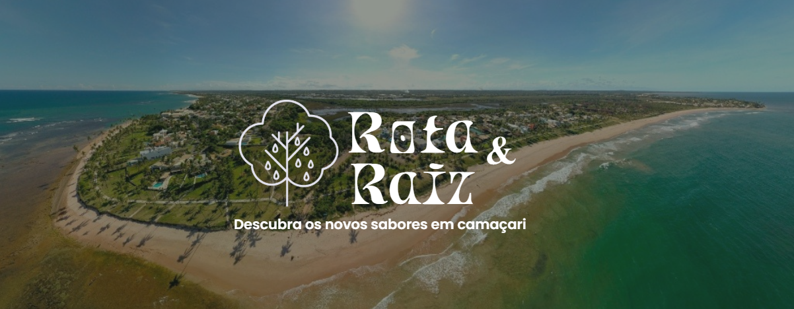

Culinária de terreiro
Descrição (ex: “bem avaliado, mais curtidos”).

Descrição (ex: “bem avaliado, mais curtidos”).
Mais curtidos.
Comida baiana bem avaliada.
Bem avaliado e com atendimento especial.
Especialidades locais e comida caseira.
Ambiente tranquilo com pratos regionais.
Peixes e frutos do mar frescos e bem temperados.
Ótimo para cafés especiais e petiscos rápidos.